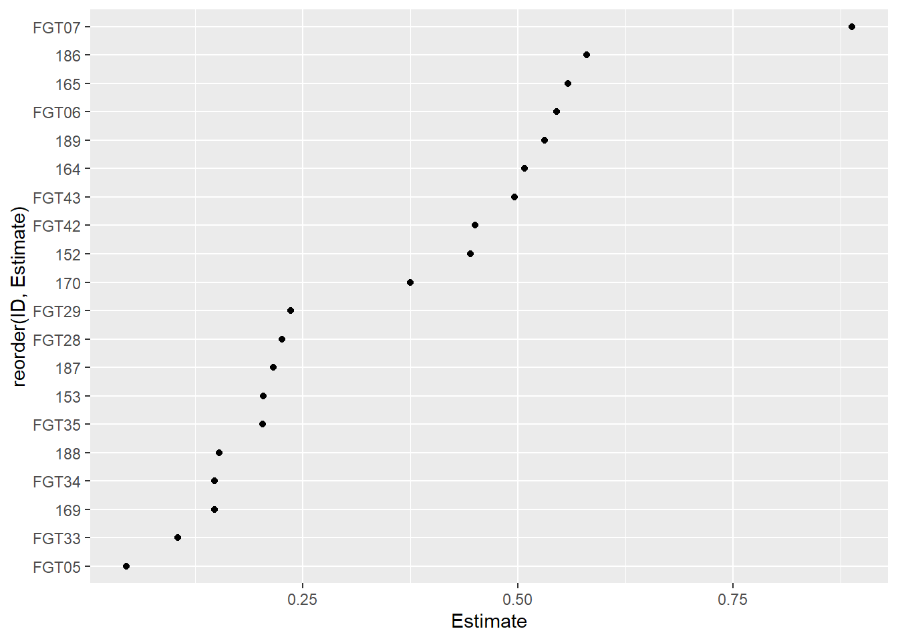

m_anti <- lm(severity ~ treat*dose, data = antifungicos)Regressão Linear, Não Linear e Análise de Resíduos
Regressão linear
A regressão linear é uma das técnicas estatísticas mais usadas para analisar relações entre variáveis. No R, essa análise pode ser feita de forma simples e poderosa com a função lm(). Ela busca modelar a relação entre uma variável resposta contínua (como produtividade, altura, consumo) e uma ou mais variáveis explicativas (como adubação, idade, peso), assumindo uma relação linear entre elas.
Cria um modelo linear explicando a variável severity (severidade) em função dos fatores treat (tratamento), dose, e sua interação (treat*dose).
Regressão Não Linear
Regressão Não Linear é uma técnica estatística utilizada quando a relação entre as variáveis independentes e a variável dependente não pode ser adequadamente descrita por uma linha reta, como ocorre na regressão linear. Em muitos fenômenos biológicos, agronômicos e ambientais, os dados seguem padrões curvilíneos, como crescimento de plantas, degradação de substâncias ou resposta a doses de fertilizantes, sendo necessário utilizar modelos não lineares como logísticos, exponenciais ou sigmoidais. Nessa abordagem, os parâmetros do modelo são estimados por métodos iterativos, como o algoritmo de Gauss-Newton, para minimizar a soma dos quadrados dos resíduos. A escolha de um modelo não linear adequado deve ser baseada no conhecimento do processo estudado, garantindo que o modelo reflita o comportamento teórico esperado. A análise inclui avaliar a qualidade do ajuste, verificar resíduos e interpretar os parâmetros estimados, que muitas vezes possuem significado biológico direto, como taxa de crescimento ou capacidade máxima. Dessa forma, a regressão não linear se torna uma ferramenta essencial para modelar fenômenos complexos, permitindo previsões e interpretações mais realistas do comportamento dos dados ao longo do tempo ou sob diferentes condições experimentais.
library(dplyr)
fungi <- gsheet2tbl("https://docs.google.com/spreadsheets/d/1bq2N19DcZdtax2fQW9OHSGMR0X2__Z9T/edit?gid=465348652#gid=465348652")
#vizualiza
fungi |>
group_by(code, dose) |>
summarise(germination = mean(germination)) |>
ggplot(aes(dose, germination)) +
geom_point()+
geom_line() +
facet_wrap(~ code)
#Ajuste de modelo não linear para um isolado
FGT43 <- fungi |>
group_by(code, dose) |>
summarize(germination = mean(germination)) |>
filter(code == "FGT43")
library(drc)
m43 <- drm(germination ~ dose,
data = FGT43,
fct = LL.3())
# AIC - quanto menor melhor LL.3 foi melhor que W2.3 e W1.3
# Tem que testar para outros isolados
summary(m43)
Model fitted: Log-logistic (ED50 as parameter) with lower limit at 0 (3 parms)
Parameter estimates:
Estimate Std. Error t-value p-value
b:(Intercept) 1.219692 0.175081 6.9664 0.006069 **
d:(Intercept) 48.486911 1.456007 33.3013 5.952e-05 ***
e:(Intercept) 0.495895 0.060851 8.1494 0.003864 **
---
Signif. codes: 0 '***' 0.001 '**' 0.01 '*' 0.05 '.' 0.1 ' ' 1
Residual standard error:
1.636105 (3 degrees of freedom)AIC(m43)[1] 26.7762plot(m43)
ED(m43, 50) #estimando Ec50
Estimated effective doses
Estimate Std. Error
e:1:50 0.495895 0.060851library(ec50estimator)
df_ec50 = estimate_EC50(germination ~ dose,
data = fungi,
isolate_col = "code",
strata_col = "state",
interval = "delta",
fct = drc::LL.3())
df_ec50 |>
ggplot(aes(reorder(ID, Estimate), Estimate)) +
geom_point()+
coord_flip()
df_ec50 |>
ggplot(aes(x = Estimate)) +
geom_histogram(bins = 5, color = "white")
Verificação de Resíduos
Usa o pacote DHARMa para simular e diagnosticar os resíduos, verificando:
Normalidade dos resíduos
Homogeneidade de variâncias
Possíveis outliers
Autocorrelação
library(DHARMa)
library(emmeans)
anova(m_anti) Analysis of Variance Table
Response: severity
Df Sum Sq Mean Sq F value Pr(>F)
treat 1 0.113232 0.113232 30.358 4.754e-05 ***
dose 1 0.073683 0.073683 19.755 0.0004077 ***
treat:dose 1 0.072739 0.072739 19.502 0.0004326 ***
Residuals 16 0.059678 0.003730
---
Signif. codes: 0 '***' 0.001 '**' 0.01 '*' 0.05 '.' 0.1 ' ' 1plot(simulateResiduals(m_anti))
media_anti <- emmeans(m_anti, ~treat | dose)
media_antidose = 0.5:
treat emmean SE df lower.CL upper.CL
Ionic liquid 0.2921 0.0273 16 0.23420 0.3500
Tebuconazole 0.0210 0.0273 16 -0.03690 0.0789
dose = 2.0:
treat emmean SE df lower.CL upper.CL
Ionic liquid 0.0501 0.0273 16 -0.00781 0.1080
Tebuconazole 0.0202 0.0273 16 -0.03768 0.0781
Confidence level used: 0.95 library(multcomp)
cld(media_anti) dose = 0.5:
treat emmean SE df lower.CL upper.CL .group
Tebuconazole 0.0210 0.0273 16 -0.03690 0.0789 1
Ionic liquid 0.2921 0.0273 16 0.23420 0.3500 2
dose = 2.0:
treat emmean SE df lower.CL upper.CL .group
Tebuconazole 0.0202 0.0273 16 -0.03768 0.0781 1
Ionic liquid 0.0501 0.0273 16 -0.00781 0.1080 1
Confidence level used: 0.95
significance level used: alpha = 0.05
NOTE: If two or more means share the same grouping symbol,
then we cannot show them to be different.
But we also did not show them to be the same. library(agricolae)
cv.model(m_anti)[1] 63.7165DHARMa plot:
Verifica se os resíduos apresentam distribuição normal e variâncias homogêneas.
Se houver padrões ou outliers extremos, pode indicar violação de pressupostos.
Modelo Linear Misto
Um modelo linear misto é uma ferramenta estatística utilizada para analisar dados que possuem tanto efeitos fixos quanto efeitos aleatórios em sua estrutura. Os efeitos fixos correspondem aos fatores de interesse principal no estudo, como diferentes tratamentos ou doses aplicadas, enquanto os efeitos aleatórios representam fontes de variação não controladas diretamente, como blocos, indivíduos ou locais, permitindo controlar essa variabilidade sem precisar analisá-la isoladamente. Esses modelos são amplamente utilizados em experimentos agrícolas e de campo, pois permitem avaliar o efeito dos tratamentos enquanto consideram a variação entre blocos ou repetições, garantindo resultados mais realistas e precisos mesmo quando há dependência entre as observações. Dessa forma, os modelos lineares mistos contribuem para análises mais robustas e confiáveis, sendo fundamentais em estudos que envolvem dados com estrutura hierárquica ou medidas repetidas ao longo do tempo.
library(lme4) #modelo misto (modelo aleatório)Carregando pacotes exigidos: Matrixm_milho <- lmer(index ~ hybrid*method + (1|block:hybrid_block), data = milho)
car::Anova(m_milho)Analysis of Deviance Table (Type II Wald chisquare tests)
Response: index
Chisq Df Pr(>Chisq)
hybrid 11.4239 5 0.04359 *
method 4.6964 1 0.03023 *
hybrid:method 15.8062 5 0.00742 **
---
Signif. codes: 0 '***' 0.001 '**' 0.01 '*' 0.05 '.' 0.1 ' ' 1plot(simulateResiduals(m_milho))
media_milho <- emmeans(m_milho, ~ method | hybrid)
cld(media_milho, Letters = letters)hybrid = 30F53 HX:
method emmean SE df lower.CL upper.CL .group
silk 25.0 3.57 24.9 17.7 32.3 a
pin 25.3 3.57 24.9 17.9 32.6 a
hybrid = 30F53 YH:
method emmean SE df lower.CL upper.CL .group
pin 24.6 3.57 24.9 17.3 31.9 a
silk 26.2 3.57 24.9 18.9 33.6 a
hybrid = 30K64:
method emmean SE df lower.CL upper.CL .group
pin 20.6 3.57 24.9 13.2 27.9 a
silk 21.5 3.57 24.9 14.2 28.8 a
hybrid = 30S31H:
method emmean SE df lower.CL upper.CL .group
silk 26.5 3.57 24.9 19.2 33.8 a
pin 38.1 3.57 24.9 30.8 45.4 b
hybrid = 30S31YH:
method emmean SE df lower.CL upper.CL .group
silk 26.6 3.57 24.9 19.3 34.0 a
pin 32.5 3.57 24.9 25.2 39.8 a
hybrid = BG7049H:
method emmean SE df lower.CL upper.CL .group
silk 19.2 3.57 24.9 11.8 26.5 a
pin 19.4 3.57 24.9 12.1 26.8 a
Degrees-of-freedom method: kenward-roger
Confidence level used: 0.95
significance level used: alpha = 0.05
NOTE: If two or more means share the same grouping symbol,
then we cannot show them to be different.
But we also did not show them to be the same. m_milho2 <- lmer(yield ~ hybrid*method + (1|block:hybrid_block), data = milho)
car::Anova(m_milho2)Analysis of Deviance Table (Type II Wald chisquare tests)
Response: yield
Chisq Df Pr(>Chisq)
hybrid 22.5966 5 0.0004031 ***
method 0.1052 1 0.7456932
hybrid:method 25.9302 5 9.206e-05 ***
---
Signif. codes: 0 '***' 0.001 '**' 0.01 '*' 0.05 '.' 0.1 ' ' 1plot(simulateResiduals(m_milho2))
media_milho2 <- emmeans(m_milho2, ~ method | hybrid)
cld(media_milho2, Letters = letters)hybrid = 30F53 HX:
method emmean SE df lower.CL upper.CL .group
silk 9988 798 21.1 8328 11647 a
pin 11208 798 21.1 9548 12867 b
hybrid = 30F53 YH:
method emmean SE df lower.CL upper.CL .group
silk 9211 798 21.1 7552 10870 a
pin 9408 798 21.1 7748 11067 a
hybrid = 30K64:
method emmean SE df lower.CL upper.CL .group
silk 10361 798 21.1 8702 12020 a
pin 11675 798 21.1 10016 13334 b
hybrid = 30S31H:
method emmean SE df lower.CL upper.CL .group
pin 8118 798 21.1 6459 9777 a
silk 9185 798 21.1 7526 10844 b
hybrid = 30S31YH:
method emmean SE df lower.CL upper.CL .group
pin 7836 798 21.1 6177 9495 a
silk 8277 798 21.1 6618 9936 a
hybrid = BG7049H:
method emmean SE df lower.CL upper.CL .group
pin 11970 798 21.1 10311 13629 a
silk 12833 798 21.1 11174 14492 a
Degrees-of-freedom method: kenward-roger
Confidence level used: 0.95
significance level used: alpha = 0.05
NOTE: If two or more means share the same grouping symbol,
then we cannot show them to be different.
But we also did not show them to be the same. Efeitos fixos:
hybrid,method, e sua interação.Efeito aleatório: intercepto por
block:hybrid_block, controlando variação entre parcelas.